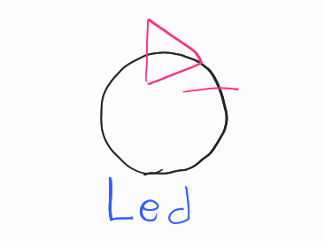
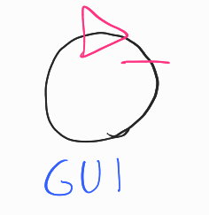

LABORATORIO DI INGEGNERIA DEI SISTEMI SOFTWARE
WASTESERVICE - SPRINT 2 REPORT
L. Guerra, F. Lenzi
Index
Requirements
A company intends to build a WasteService for the separate collection of waste, composed of a set of elements:
-
a service area (rectangular, flat) that includes:
-
an INDOOR port, to enter waste material
-
a PlasticBox container, devoted to store objects made of plastic, upto MAXPB kg of material.
-
a GlassBox container, devoted to store objects made of glass, upto MAXGB kg of material.
The service area is free from internal obstacles, as shown in the following picture:

-
-
a DDR robot working as a transport trolley, that is intially situated in its HOME location. The transport trolley has the form of a square of side length RD.
The transport trolley is used to performa a deposit action that consists in the following phases:
-
pick up a waste-load from a Waste truck located on the INDOOR
-
go from the INDOOR to the proper waste container
-
deposit the waste-load in the container
-
-
a Service-manager (an human being) which supervises the state of the service-area by using a WasteServiceStatusGUI.
-
a Sonar and a Led connected to a RaspnerryPi. The Led is used as a warning devices, according to the following scheme:
-
the Led is off when the transport trolley is at HOME
-
the Led blinks while the transport trolley is moving
-
the Led is on when transport trolley is stopped.
The Sonar is used as an ‘alarm device’: when it measures a distance less that a prefixed value DLIMT, the transport trolley must be stopped. It will be resumed when Sonar detects again a distance higher than DLIMT.
-
TFRequirements
The main goal of the WasteService software is to allow a Waste truck to deposit its load of TruckLoad kg plastic or glass in the proper container.
The global story can be described as follows:
-
The Waste truck driver approaches the INDOOR and sends (using a smart device) a request to store the load, by specifyng the type of the material (plastic or glass) and its TruckLoad.
-
The WasteService sends the answer loadaccept if the final content of proper container will not surpass the maximum value allowed (MAXPB or MAXGB). Otherwise, it sends the answer loadrejecetd and the Waste truck leaves the INDOOR area.
-
When the load is accepted, the transport trolley reaches the INDOOR, picks up the material, goes to the proper container and settles the material. During this activity, the WasteService blinks the Led
-
When the deposit action is terminated, the transport trolley excutes another deposit command (if any) or returns to its HOME.
The WasteService must create a WasteServiceStatusGUI that shows to the Service-manager:
-
the current state of the transport trolley and it position in the room
-
the current weigth of the material stored in the two waste-containers
-
the current state of the Led
Requirement analysis
Per ogni requisito analizzato in questo SPRINT è stato incluso un modello eseguibile in Qak.
Requisiti e chiarimenti
-
request: il WasteService accetta richieste di deposito da Waste truck che arrivano nella zona specificata come INDOOR, che specificicano il tipo di materiale da depositare
- il sistema può controllare se c'è spazio per un certo materiale: accetta (risposta loadaccept), e rifiuta (risposta loadrejected) le richieste di deposito in caso contrario
-
Domanda: le richieste possono essere gestite anche mentre il robot è in attività?
Sì, potrebbe arrivare altro camion che chiede.
-
Domanda: solo un camion alla volta in INDOOR?
Sì.
-
deposit: il trolley, quando viene attivato, raccoglie i materiali a INDOOR, e li deposita, in base al tipo, in GLASS BOX o PLASTIC BOX; questa è una deposit action:
- Raccolta di rifiuti da Waste truck in INDOOR
- Andare da INDOOR a contenitore rifiuti (* BOX)
- Depositare rifiuti nel contenitore
-
indoor-more-requests: il trolley, terminata una deposit action, torna a HOME solo se non ci sono altre richieste da gestire, sennò gestisce subito la richiesta successiva andando a INDOOR
-
led: nel sistema è presente un led che:
- è acceso se il trolley è a HOME
- lampeggia se il trolley è in attività
- è spento se il trolley è in stato di stop
-
sonar-stop: è presente un sonar che, se misura una distanza sotto DLIMIT (valore prefissato), mette il trolley in stato di stop fino a che la distanza non torna a DLIMIT, nel qual caso il trolley riparte
-
Domanda: cosa vuol dire precisamente stop? Torna a HOME o rimane lì?
Si ferma e basta.
-
-
gui: è presente una gui (WasteServiceStatusGUI) che mostra i seguenti dati:
- Stato del trolley e sua posizione
-
Domanda: Posizione del trolley: deve essere precisa o informazione più generale (INDOOR, in mezzo, HOME, ecc)?
Basta una posizione più generale.
- Carico depositato attuale (in kg)
- Stato del Led (acceso/spento/lampeggiante)
In questo secondo SPRINT verranno analizzati i requisiti led e gui, data la natura simile di interfaccia sullo stato del sistema e sviluppato il software annesso.
Glossario
-
WasteService: il servizio centrale che risponde alle richieste dei waste truck
-
Waste truck: i camion che arrivano dall'esterno a depositare rifiuti
-
Area di servizio: INDOOR, PlasticBox, GlassBox, aree definite nella creazione del sistema e punti di riferimento per il trolley. In particolare:
- INDOOR: area dove i waste truck si fermano a lasciare il proprio carico, facendo una richiesta di deposito. Essa può contenere un waste truck alla volta
- PlasticBox: area dove depositare la plastica
- GlassBox: area dove depositare il vetro
-
transport trolley (o trolley): robot DDR (differential drive robot), di dimensione approssimabile a quadrato di lato RD, usato per trasportare i rifiuti nel sistema
-
Service-manager: umano che supervisiona il sistema tramite la WasteServiceStatusGUI
-
Sonar: sensore che misura distanza
-
Led: spia luminosa
Analisi dei requisiti
Analisi led:
La gestione del Led verrà fatta tramite il software fornito dal committente, gli script led25GpioTurnOn.sh e led25GpioTurnOff.sh. L'azienda dispone già di una libreria per gestire tramite Java il Led con questi script, cioè it.unibo.radarSystem22.domain, quindi sarà opportuno utilizzarla.
Dai requisiti, si evincono tre primitive che il led deve poter eseguire: accendersi, spegnersi, e lampeggiare, che verranno chiamate turnOn, turnOff, blink. Il software fornito e la libreria che lo controlla implementano solo le prime due, quindi questo abstraction gap va colmato realizzando un componente intermedio, che chiameremo BlinkLed, che implementa la terza primitiva. Questo componente deve comunicare con il resto del sistema, quindi viene modellato come attore.

La natura precisa di questo attore lascia punti aperti che verranno gestiti in fase di analisi del problema.
Inoltre, il Led deve poter conoscere lo stato del Trolley. Anche questo può essere implementato in più modi che rimangono un punto aperto.
Intanto però, può già essere abbozzato un TestPlan:
Analisi gui:
Date le risorse pre-esistenti dell'azienda e il lavoro molto ridotto rispetto alle alternative, è opportuno implementare WasteServiceStatusGUI come web-app.
Anche in questo caso, dovendo comunicare con il resto del sistema, è opportuno modellarla come attore:

In questo documento, il nome StatusGUI verrà usato come sinonimo di WasteServiceStatusGUI per comodità.
Come per il Led, il tipo di comunicazione con il resto del sistema rimane un punto aperto.
Materiale fornito dal committente
-
Robot DDR: viene fornita una componente software, BasicRobot22, che implementa comandi primitivi MOVE = w | s | l | r | h, e permette di fare step in avanti per un certo tempo.
-
Sonar: viene fornito un programma in C, SonarAlone.c, che stampa su standard output la distanza attualmente rilevata dal sonar, configurando le porte GPIO in questo modo:
- Porta VCC : pin fisico 4 (+5v)
- Porta GND : pin fisico 6 (GND)
- Porta TRIG: pin fisico 11 (WPI 0, BCM 17)
- Porta ECHO: pin fisico 13 (WPI 2, BCM 27)
-
Led: vengono forniti gli script bash e led25GpioTurnOn.sh e led25GpioTurnOff.sh per accendere e spegnere un Led connesso alla porta GPIO 25 di un Raspberry Pi.
Problem analysis
Componenti
Requisito led - componenti
Emergono due opzioni principali su come gestire il Led:
-
Usare un solo attore BlinkLed che gestisce i dati di dominio e interagisce direttamente con il dispositivo tramite la libreria esistente e il software fornito. Quindi, questo singolo componente riceverebbe i dati dello stato del Trolley e si occuperebbe di accensione e spegnimento del Led.
-
Dividere gli incarichi tra due componenti:
- BlinkLed, che realizzerebbe le tre primitive di turnOn, turnOff, blink e interagirebbe con il dispositivo tramite la libreria, attraverso istruzioni ricevute dall'esterno.
- LedController, che riceverebbe i dati dello stato del trolley e interagirebbe con BlinkLed.
Conclusione. Si ritiene migliore la seconda opzione, vale a dire dividere gli incarichi, visto che rispetta il principio di singola responsabilità. Inoltre, questo permetterebbe il riutilizzo dell'attore BlinkLed in altri contesti, essendo agnostico al dominio.
Interazione
Il problema della comunicazione per led e gui è analogo, quindi verranno analizzati insieme.
Escludendo di usare comunicazione punto-punto come dispatch e richieste, data la scarsa espandibilità e la complicazione nella necessità di modificare ogni attore da analizzare, le opzioni attuali sono due:
-
Usare eventi: si potrebbero aggiungere emissioni di eventi contenenti i dati di stato attuale dei vari attori di interesse per Led e WasteServiceStatusGui, incluso il Led i cui dati sono visualizzati dalla Gui.
Event trolleyStatus : trolleyStatus(STATUS,POS) Event storageStatus : storageStatus(CONTENTS) Event ledStatus : ledStatus(STATUS) //on|blink|off -
Osservabilità: come detto nel progetto dello SPRINT 1, i vari attori sono osservabili tramite COAP. Quindi un'opzione sarebbe rendere LedController e StatusGUI osservatori degli attori rilevanti (e rendere osservabile il Led) e aggiungere alle informazioni osservabili degli attori di interesse eventuali dati mancanti.
Conclusione. Viene ritenuta come opzione migliore la seconda, l'uso di observer, visto che gli attori creati nello SPRINT 1 sono già risorse osservabili con le informazioni necessarie; quindi, non sarebbe necessaria alcuna modifica al software già sviluppato per adempiere a questo requisito, il che sarebbe un grande vantaggio. Inoltre, il fatto che COAP sia un protocollo già definito renderebbe ancora più facile l'estendibilità.
In luce di queste considerazioni, sono quindi aggiornati i modelli eseguibili di Led e Gui:
Per realizzarli, è stata sviluppata una utility per Qak per permettere agli attori di agire da osservatori, oltre che da risorse osservabili. Ulteriori dettagli sono presenti nel file qakactor.observer.html.
Posizione trolley
La posizione del Trolley, come da analisi dello Sprint 1, non è ad esso nota in termini di nomi del dominio ("home", "indoor", ecc.) essendo esso usato come "attuatore", ma solo in termini di coordinate numeriche. La componente che conosce la posizione del Trolley in termini di nomi dei luoghi è WasteService.
Dovendo StatusGUI conoscere la posizione del Trolley in termini di nomi dei luoghi, si pongono due possibilità:
-
StatusGUI potrebbe osservare anche WasteService, che comunque già fornisce questa informazione come risorsa.
-
StatusGUI potrebbe continuare ad osservare solo il Trolley e a decodificare il nome delle posizioni dalla configurazione.
Conclusioni. È stato deciso il primo approccio, ritenuto più vicino al principio di singola responsabilità; invece di mettere la logica di rilevazione del luogo dalla posizione in più componenti, la si mette in un componente solo (WasteService) e si chiede ad esso lo stato attuale del dato.
LedController ha un problema simile, cioè sapere se Trolley si trovi a HOME o meno: viene usata una soluzione analoga.
Architettura Logica
Ecco quindi l'architettura logica finale del sistema in generale per questo SPRINT:

Modello eseguibile generale / prototipo. Si noti come rispetto al modello eseguibile dello SPRINT 1, non sia stato necessario modificare niente del codice preesistente ma sia bastato aggiungere gli attori-osservatori.
Test Plan
TestPlan: led
Test plan in Kotlin: TestLed.kt
- Test Led: creazione di server COAP "fasullo" allo stesso indirizzo del contesto del sistema principale osservato. Invio di dati che portano ai vari stati del Led, poi verifica che questi stati siano stati raggiunti.
TestPlan: gui
Test plan in Kotlin: TestGui.kt. Nota: lanciare un test alla volta, a causa di interazioni tra Qak e JUnit.
- Test Gui: creazione di server COAP "fasullo" allo stesso indirizzo del contesto del sistema principale osservato. Invio di dati che portano a vari stati della Gui, e verifica che la pagina risultante venga modificata correttamente.
Project
La progettazione e lo sviluppo delle componenti software stabilite in fase di analisi è stata divisa in questo modo:
- BlinkLed, LedController: F. Lenzi
- WasteServiceStatusGUI: L. Guerra
Struttura del software
Dato che entrambi i componenti non interagivano con il sistema Qak se non tramite l'osservazione
della
risorsa server COaP, sono stati realizzati come semplici oggetti, non attori,
dotati di
capacità di osservazione mediante una CoapConnection (libreria unibo.comm22)
che
sfrutta la libreria Californium per Coap.
Questo permette di semplificare abbastanza la struttura, non richiedendo contesti di attori e conseguenti adattatori observer-attore come quello realizzato per rappresentare il modello dell'analisi. Infatti, i progetti dei due componenti non includono o conoscono neanche il framework Qak.
I componenti sono stati contenuti in due nuovi progetti:
- wasteservice.led: contiene le classi corrispondenti a BlinkLed e LedController.
- wasteservice.statusgui: contiene il server Spring Boot che gestisce la WasteServiceGUI.
La struttura dei package diventa la seguente (evidenziati solo i cambiamenti importanti):
- wasteservice.shared
- it.unibo.lenziguerra.wasteservice (aggiunti nuovi enumerativi, test fixture, e classi minori)
- it.unibo.lenziguerra.wasteservice.utils
-
- it.unibo.lenziguerra.wasteservice.data (classi dati, vedi sotto)
- wasteservice.core
- it.unibo.lenziguerra.wasteservice.wasteservice
- it.unibo.lenziguerra.wasteservice.trolley
- it.unibo.lenziguerra.wasteservice.storage
- wasteservice.led
- it.unibo.lenziguerra.wasteservice.led
- wasteservice.statusgui
- it.unibo.lenziguerra.wasteservice.statusgui
Classi dati
Come da analisi, non sarebbe servito modificare il progetto core per permettere il funzionamento dei nuovi componenti, essendo gli attori già impostati per essere osservabili con dati rilevanti. Sono state comunque fatte modifiche minori, soprattutto per usare le classi dati aggiunte in questo SPRINT.
Per strutturare in modo più semplice e consistente il formato dei dati contenuti nelle risorse
osservabili COaP, questi dati sono stati incapsulati in apposite data class Kotlin,
contenute
in wasteservice.shared:it.unibo.lenziguerra.wasteservice.data. Esse hanno metodi
fromProlog e toString per convertire i dati da stringa osservata a dato di
dominio, con enumerativi vari rilevanti:
data class TrolleyStatus (val status: State, val pos:
Array<Int>,
val contentType: WasteType?, val contentAmount: Float) {
enum class State {
WORK, STOPPED
}
companion object {
fun fromProlog(prolStr: String): TrolleyStatus {
[...]
}
}
override fun toString(): String {
return "state(${status.toString().lowercase()})\npos(${pos[0]},${pos[1]})" +
(contentType?.let { "\ncontent($contentType,$contentAmount)" } ?: "")
}
}
La stringa restituita da queste classi è quella che viene passata a updateResource nei
vari
attori (o equivalente per il Led).
Led
Il led, come da analisi, viene gestito tramite la libreria già realizzata it.unibo.radarSystem22.domain, che a sua volta interagisce con il software del committente (led25GpioTurnOn.sh e led25GpioTurnOff.sh).
Come sopra i due componenti da analisi (BlinkLed e LedController) sono realizzati non come attori Qak, ma come POJO. In particolare, vengono realizate queste classi:
-
BlinkLed: wrapper per le classi di radarSystem22.domain, che permette di impostare il led, oltre che ad acceso o spento, a uno stato di lampeggiamento, ed è osservabile. Analogo all'attore BlinkLed in analisi.
-
LedController: analogo a LedController in analisi, controlla un BlinkLed e osserva Trolley e WasteService.
-
BlinkLedCoapServer: un server COaP standalone, per rendere osservabile il BlinkLed come risorsa.
-
LedContainer: integra il sotto-sistema, istanziando e collegando i vari componenti.
BlinkLed
Da requisiti, il led deve poter essere impostato in stato di lampeggiamento, acceso, o spento,
realizzando le primitive turnOn, turnOff, e blink. L'interfaccia della
classe
BlinkLed, IBlinkLed, è quindi la seguente:
interface IBlinkLed {
fun turnOn()
fun turnOff()
fun blink()
val status: BlinkLedState
var updateHandler: ((BlinkLedState) -> Unit)?
}
BlinkLedState è un nuovo enumerativo che corrisponde ai tre stati possibili. La funzione
updateHandler, invece, è un callback che può essere impostato per rendere osservabile il
BlinkLed, chiamato a ogni cambiamento di stato.
Il lampeggiamento in BlinkLed è realizzato creando un thread apposito al cambiamento di
stato:
BlinkLedState.BLINKING -> thread {
while (status == BlinkLedState.BLINKING) {
led.turnOn()
CommUtils.delay(500)
led.turnOff()
CommUtils.delay(500)
}
}
esso non viene attivato se il Led sta già lampeggiando.
LedController
LedController riceve un IBlinkLed, e crea due connessioni Coap con il
contesto
Qak di wasteservice.core per osservare lo stato sia di WasteService che di Trolley, come da
analisi. Il funzionamento è analogo all'attore dell'analisi, con due handler Coap per gestire le due
risorse osservate.
BlinkLedCoapServer
BlinkLedCoapServer è un semplice wrapper per CoapServer di Californium, che
contiene una CoapResourceBlinkLed, contenente un riferimento a ILed. Offre
una
funzione sendUpdates che invia aggiornamenti a tutti gli Observer della risorsa connessi. Espone la
risorsa all'Uri /led.
LedContainer
LedContainer si limita a configurare i vari componenti e istanziarli, e offrire il punto
di
ingresso del sistema. Il main, infatti, è lì contenuto. In particolare, crea un istanza di
ILed di radarSystem22.domain reale o mock in base alla configurazione della
libreria, contenuta in DomainSystemConfig.json.
Inoltre, rende il led osservabile impostando il callback per lanciare sendUpdates nel
BlinkLedCoapServer:
led.updateHandler = { ledServer.sendUpdates() }
WasteServiceStatusGUI
Come da analisi, WasteServiceStatusGUI è stata implementata come web application. Il server web è realizzato, come per WasteService, tramite il framework Spring Boot. In particolare, la pagina web rimane connessa al server tramite WebSocket, per permettere aggiornamenti in diretta dei dati da monitorare senza aggiornare la pagina.
L'osservazione dei dati è svolta dal WebSocketHandler Spring che gestisce le
connessioni,
implementato nella classe StatusGuiWebsocketHandler.
StatusGuiWebsocketHandler
StatusGuiWebsocketHandler tiene traccia di ogni sessione di WebSocket attualmente
attiva, e
contiene le 4 CoapConnection ai componenti del sistema osservati (gli attori
wasteservice, trolley, storagemanager e il
BlinkLedCoapServer),
ciascuna gestita da un Observer. Gli Observer inviano a ogni sessione WebSocket attiva aggiornamenti
sui
dati ogni volta che la risorsa osservata cambia.
L'handler in sè accetta un unico input da parte delle sessioni di WebSocket, vale a dire la stringa get, alla quale risponde con aggiornamenti su tutti i dati. Questa viene usata al caricamento della pagina per inizializzare la StatusGUI.
Observer
Gli observer sono estensioni di CoapHandler della libreria Californium, una classe per
ogni
risorsa osservata. Le classi sono presenti nel file Observers.kt.
Ogni observer contiene un riferimento alla lista di sessioni WebSocket attive, e invia aggiornamenti
alla ricezione dei dati.
Altro
Sono state fatte altre modifiche minori a wasteservice.core e wasteservice.shared:
- Aggiunto un dispatch updateState a Trolley per impostare il suo stato a stopped in caso di errore.
- Aggiunto gruppo source testFixtures in wasteservice.shared per condividere librerie di testing con gli altri progetti senza includerle nella versione di distribuzione.
- Correzione all'uso di
WebSocketHandlerdi Spring Boot inWasteServiceServerper coerenza con StatusGUI, usa @Component e @AutoWired per evitare di inizializzare l'handler 2 volte con Spring.
Test
I test dell'analisi sono stati adattati al sistema, funzionando nello stesso modo, cioè creazione di contesto Qak con attori mock la cui risorsa viene arbitrariamente pilotata nel test e osservata dai componenti da testare. TestGui è eseguibile anche dalla classe di test, senza dover per forza eseguire un test alla volta.
I test possono inoltre essere eseguiti senza avviare nessun software oltre al test, invece di richiedere WEnv/BasicRobot come nello SPRINT precedente. Questo grazie alla maggiore flessibilità data dalla struttura ad Observer.
È stato inoltre aggiunto un test per verificare il corretto funzionamento del lampeggiamento in BlinkLed:
Struttura del sistema
La struttura finale del sistema nello SPRINT 2 è riassunta in questo grafico:

Le connessioni di WasteServiceStatusGUI sono riassunte per testo per semplificare il grafico.
Immagine Docker
Vengono forniti i file Docker-compose elencati in seguito. Ci si può connettere alla porta 8080 per aprire l'interfaccia per i WasteTruck usata per inviare richieste, alla porta 8090 per visualizzare l'ambiente virtuale del robot, e alla porta 8095 per visualizzare WasteServiceStatusGUI.
-
wasteservice2_withledmock.yaml: esegue tutto il sistema in locale, usando un mock per il Led che stampa lo stato attuale su standard output.
-
wasteservice2_noled.yaml: esegue il sistema senza la parte di wasteservice.led; essa va eseguita fuori da Docker sul Raspberry Pi, il quale IP va configurato dentro a questo file yaml nel campo wasteservice.led sotto extra_hosts del servizio wasteservice.statusgui. Per trasferire facilmente i file di distribuzione al Raspberry Pi viene fornito lo script scpDistrToRasp.sh, dove occorre configurare l'hostname/IP del raspberry al posto di
raspinei vari comandi.
Testing
I test dell'analisi sono stati adattati al sistema, funzionando nello stesso modo, cioè creazione di contesto Qak con attori mock la cui risorsa viene arbitrariamente pilotata nel test e osservata dai componenti da testare. TestGui è eseguibile anche dalla classe di test, senza dover per forza eseguire un test alla volta.
I test possono inoltre essere eseguiti senza avviare nessun software oltre al test, invece di richiedere WEnv/BasicRobot come nello SPRINT precedente. Questo grazie alla maggiore flessibilità data dalla struttura ad Observer.
È stato inoltre aggiunto un test per verificare il corretto funzionamento del lampeggiamento in BlinkLed:
Deployment
Vengono forniti i file Docker-compose elencati in seguito. Ci si può connettere alla porta 8080 per aprire l'interfaccia per i WasteTruck usata per inviare richieste, alla porta 8090 per visualizzare l'ambiente virtuale del robot, e alla porta 8095 per visualizzare WasteServiceStatusGUI.
-
wasteservice2_withledmock.yaml: esegue tutto il sistema in locale, usando un mock per il Led che stampa lo stato attuale su standard output.
-
wasteservice2_noled.yaml: esegue il sistema senza la parte di wasteservice.led; essa va eseguita fuori da Docker sul Raspberry Pi, il quale IP va configurato dentro a questo file yaml nel campo wasteservice.led sotto extra_hosts del servizio wasteservice.statusgui. Per trasferire facilmente i file di distribuzione al Raspberry Pi viene fornito lo script scpDistrToRasp.sh, dove occorre configurare l'hostname/IP del raspberry al posto di
raspinei vari comandi.
Riassunto SPRINT 2
Il secondo SPRINT riguardava questi requisiti:
- led: nel sistema è presente un led che:
- è acceso se il trolley è a HOME
- lampeggia se il trolley è in attività
- è spento se il trolley è in stato di stop
- gui: è presente una gui (WasteServiceStatusGUI) che mostra i seguenti
dati:
- Stato del trolley e sua posizione
Analisi
In fase di analisi, è stato deciso di realizzare i due nuovi componenti sfruttando il pattern Observer, rendendoli Observer delle risorse osservabili realizzate nello SPRINT 1.
Dopo la fase di analisi, l'architettura logica del sistema è stata così pensata:
Modello eseguibile generale / prototipo. Si noti come rispetto al modello eseguibile dello SPRINT 1, non sia stato necessario modificare niente del codice preesistente ma sia bastato aggiungere gli attori-osservatori.
È stato realizzato un supporto a Qak per rendere un attore Observer di altri attori o risorse Coap, qakactor.observer.
Sono usati per interagire con il led i componenti forniti dal committente, led25GpioTurnOn.sh e led25GpioTurnOff.sh, controllati con la libreria it.unibo.radarSystem22.domain realizzata per progetti precedenti.
Sono stati realizzati, in fase di analisi, dei test plan già eseguibili sfruttando il prototipo in Qak, per ogni requisito. Sono dettagliati nella sezione apposita, e collegati di seguito:
- TestLed.kt
- TestGui.kt. Nota: lanciare un test alla volta, a causa di interazioni tra Qak e JUnit.
Progetto
I punti salienti della fase di sviluppo sono i seguenti:
-
Sono state realizzate data class per standardizzare i dati contenuti nelle risorse osservabili Coap.
-
Sia il sotto-sistema di wasteservice.led che quello di wasteservice.gui sono realizzati non usando il framework Qak, dato che l'interazione con il sistema centrale è limitata all'osservazione tramite connessioni Coap, il che semplifica la realizzazione dei due sotto-sistemi.
-
wasteservice.led è un componente passivo, costituito da vari POJO, che osserva le risorse Trolley e WasteService e gestisce il led di conseguenza.
-
wasteservice.gui è realizzato come webserver Spring Boot che serve una webapp, che viene aggiornata tramite WebSocket dagli Observer delle varie risorse osservate.
I test dell'analisi sono stati adattati all'implementazione:
Possono essere eseguiti senza lanciare programmi esterni, a differenza dei test dello SPRINT 1.
Vengono forniti i file Docker-compose elencati in seguito. Ci si può connettere alla porta 8080 per aprire l'interfaccia per i WasteTruck usata per inviare richieste alla porta 8090 per visualizzare l'ambiente virtuale del robot e alla porta 8095 per visualizzare WasteServiceStatusGUI.
-
wasteservice2_withledmock.yaml: esegue tutto il sistema in locale, usando un mock per il Led che stampa lo stato attuale su standard output.
-
wasteservice2_noled.yaml: esegue il sistema senza la parte di wasteservice.led; essa va eseguita fuori da Docker sul Raspberry Pi, il quale IP va configurato dentro a questo file yaml nel campo wasteservice.led sotto extra_hosts del servizio wasteservice.statusgui. Per trasferire facilmente i file di distribuzione al Raspberry Pi viene fornito lo script scpDistrToRasp.sh, dove occorre configurare l'hostname/IP del raspberry al posto di
raspinei vari comandi.